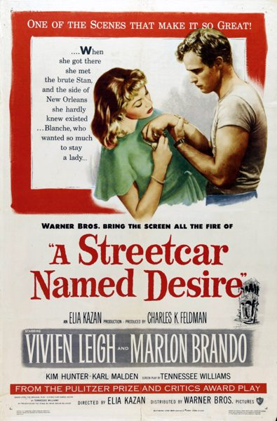

A Streetcar Named Desire
Starring: Vivien Leigh, Marlon Brando, Kim Hunter
Director: Elia Kazan
Writer: Tennessee Williams, Oscar Saul
Producer: Charles K. Feldman
A Streetcar Named Desire is a 1951 American Southern Gothic drama film adapted from Tennessee Williams's Pulitzer Prize-winning play of the same name. Directed by Elia Kazan, it stars Vivien Leigh, Marlon Brando, Kim Hunter, and Karl Malden.
Trivia
- Won the Grand Jury Prize of the Venice Film Festival.
- Won the Academy Award for Best Supporting Actress.
- Won the Academy Award for Best Supporting Actor.
- Won the Academy Award for Best Actress.
- Won the Academy Award for Best Art Direction, Black and White.
- Selected for the National Board of Review: Top Ten Films.
- Also nominated for: Academy Award for Best Actor; Academy Award for Best Director; Academy Award for Best Cinematography, Black-and-White; Academy Award for Best Writing, Adapted Screenplay; and 4 more.
- Based on A Streetcar Named Desire (1947 US play by Tennessee Williams).
- Based on A Streetcar Named Desire (original 1947 to 1949 Broadway production of the play staring Marlon Brando).
- A Streetcar Named Desire was adapted directly from the successful 1947 Broadway production of the play, which won the New York Drama Critics' Circle Award for Best Play and the Pulitzer Prize for Drama.
- Many of the cast and crew were ported over from the stage production, including director Elia Kazan and actors Marlon Brando, Kim Hunter, Karl Malden, Rudy Bond, Nick Dennis, Peg Hillias, Ann Dere, Edna Thomas, and Richard Garrick.
- Kazan intended for Jessica Tandy, who had won a Tony Award for her portrayal of Blanche, to reprise her role on film, but producer Charles K. Feldman insisted on casting an actress with more box office appeal.
Filming Locations
- New Orleans
- In Brando's autobiography, he praised Tandy but felt that Leigh "was Blanche." Aside from the opening and closing scenes, which were shot on location in New Orleans, A Streetcar Named Desire was filmed entirely on soundstages at the Warner Bros.
Previous Showings
5 Runs • 1 Festival
Original Billings: 2 runs (November 5, 1958 - November 18, 1959)
Original Run: November 5, 1958 (Wednesday - Saturday)
All runs on record (5):
- Unverified November 5, 1958 (Wednesday - Saturday)Marlon Brando, Vivien Leigh
- November 18, 1959 (Wednesday - Thursday)Marlon Brando, Vivien Leigh
- December 17 - 20, 1994w/ The Roman Spring of Mrs. Stone
- October 15 - 21, 2004Marlon Brando: His First Decade in Films, plus Nine Musicals with Fred Astaire aw/ On the Waterfront
- April 28 - May 1, 2016w/ On the Waterfront